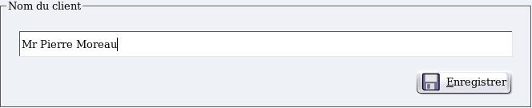
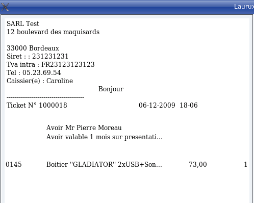
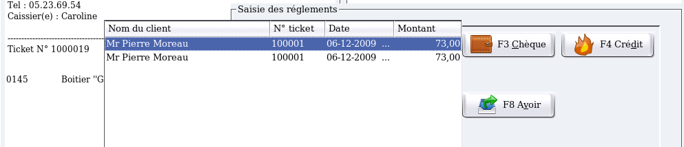
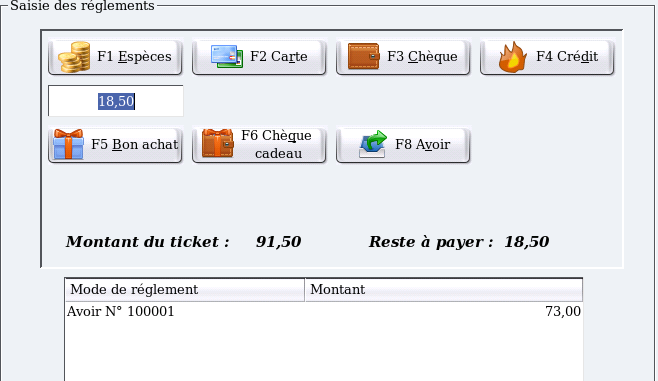

~ Laurux.Pos ~

~ Laurux.Pos ~ |
|
|
|
Gestion des avoirs
1- Saisie d'un avoir.
La saisie d'un avoir se fait par la touche F11en tout début de ticket.
Si la gestion de l'administarteur est active alors seul
l'administrateur pourra faire un avoir après saisie de son mot de
passe.

On saisit le nom du client puis après validation on
saisit les produits qui font l'objet d'un avoir.
En haut du ticket on aura la mention "Avoir" suivi
du nom du client, puis une autre ligne ou apparaitra le libellé de
l'avoir tel qu'il aura été saisi dans la table des libellé des avoirs.

En fin de ticket, comme pour un ticket normal, on fait F7. Mais comme il s'agit d'un avoir, le ticket s'imprimera directement sans passer par une saisie de règlement.
1- Retour d'un avoir.
Lors d'un retour d'avoir, on fait une saisie de ticket normal puis F7 pour ouvrir la fenêtre des règlements puis F8. Une fenêtre va s'ouvrir qui proposera l'ensemble des avoirs en cours. Sélectionner en cliquant sur la ligne souhaitée.

Si le ticket n'est pas soldé par l'avoir alors on continuera la saisie des règlements comme cela a été vu avec les règlements multiples.

----------------------------------------------------------------------------------------------------------------------